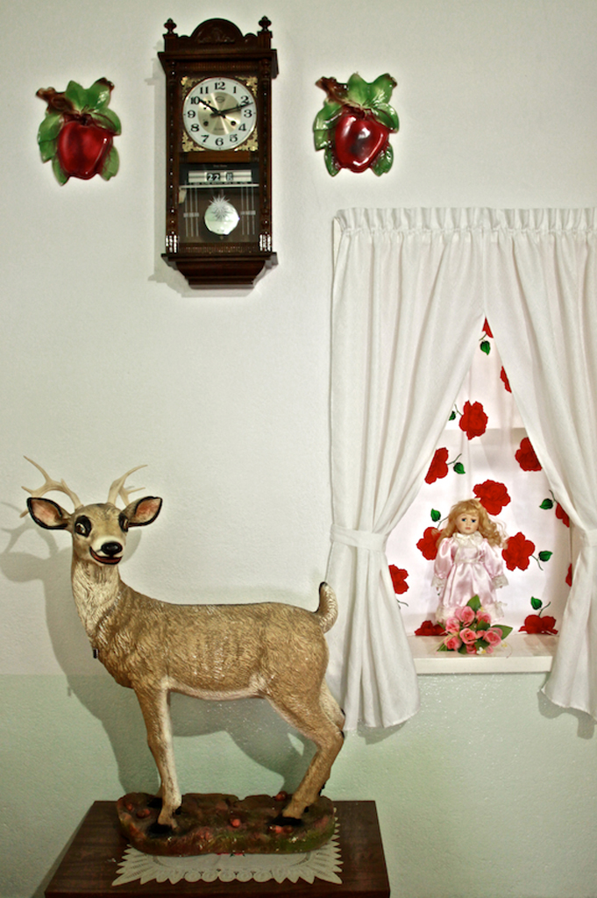

Es un acercamiento a la vida e historias de un grupos de mujeres menonitas que me han abierto las puertas de sus hogares y sus vidas para fotografiar sus espacios íntimos y sus acontecimientos diarios, dentro de las comunidades de Nuevo Ideal, Durango y la Onda Zacatecas.
La complicidad mutua y las relaciones emocionales que forman entre ellas, son parte de esta serie de imágenes donde su cotidianidad nos distraen de la idea regida de la vida conservadora de estas mujeres.
Estas comunidades aisladas, fueron para mí, unas vidas extraordinarias. El mundo de estas mujeres me parece fascinante, enigmático. Ese viaje fue para mí, en donde yo misma me aíslo de mi mundo cotidiano y emprendo por esos caminos polvosos un viaje hacia mi propia historia. Como hija de padres cristianos, rememoro por instantes mi infancia de costumbres conservadoras marcada por la presencia de la religión. De alguna manera busco en sus colores y sus costumbres mi propia historia.
Mirar a las mujeres menonitas es también ser mirada por ellas.

Eunice Adorno Mexico City (1982)
Su trabajo abarca desde la fotografía documental, hasta otras disciplinas artísticas. Sus intereses se conectan con distintas historias en comunidades, paisajes y regiones en México, que en sus formas de verse, vivir y representarse, tienen una obstinada relación con el pasado. La ausencia de memoria de tales grupos o lugares, hacia sus historias, la ha llevado a la búsqueda de archivos, imágenes, relatos y otros materiales, que le permita reconstruir otras narrativas. En sus trabajos más recientes hay un interés en la exploración de ciertos tipos de paisajes y edificaciones en decadencia que han dejado la industrialización, la ingeniería hidráulica y el cadáver que se refleja en la infraestructura social en México. Tanto en sus trabajos fotográficos como en otros medios artísticos la investigación es un acompañamiento importante para la culminación de sus proyectos.
Ha sido beneficiaria del Programa Jóvenes Creadores del Fondo Nacional para la Cultura y las Artes en tres ocasiones. Formó parte del Sistema Nacional de Creadores. 2019-2023. Con el ensayo fotográfico “Mujeres Flores” recibió el Premio Nacional de Cultura Fernando Benítez (México) en 2010. En 2011 La Fábrica (España) publicó su libro Las Mujeres Flores y fue seleccionada por el World Press Photo Joop Swart para la Masterclass en Holanda. En 2012 también fue nominada por Susan Meiselas para el premio Rudin Prize for Emerging Photographers for The Norton Museum of Art in West Palm Beach, Fl. Su trabajo ha sido exhibido en: España, Londres, Alemania, Brasil, Estados Unidos, India, e Italia.
Ha sido parte del Seminario de Fotografía Contemporánea del Centro de la Imagen, y ha formado parte de los talleres en el Gimnasio de Arte y Cultura, entre otros. Fue parte del Programa de Residencias Artísticas del International Studio & Curatorial Program en Nueva York y la Residencial “Dos Mares” Arte Latinoamericano en Marsella, Francia.
En 2023 participó con la oficina Aprdelesp de arquitectura, en el Pabellón de México en la 18a Muestra Internacional de Arquitectura en la Bienal de Venecia, Italia, con una serie de fotografías de las canchas de Basquetbol en las comunidades indígenas de Puebla, Veracruz y Sonora. También formo parte de la XX Bienal de fotografía del Centro de la Imagen.